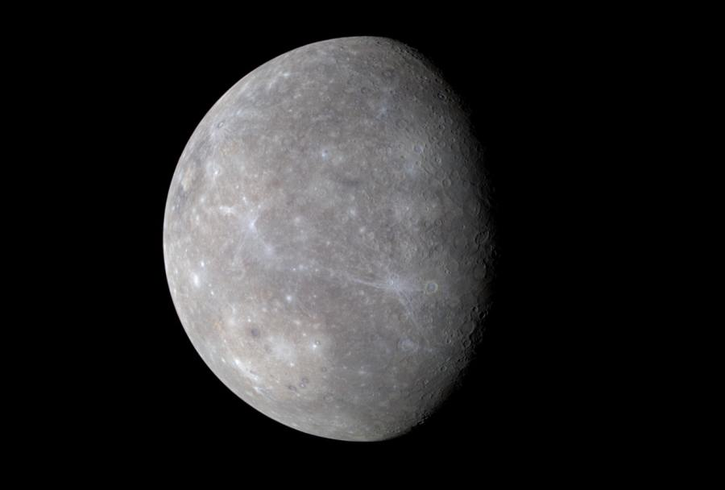
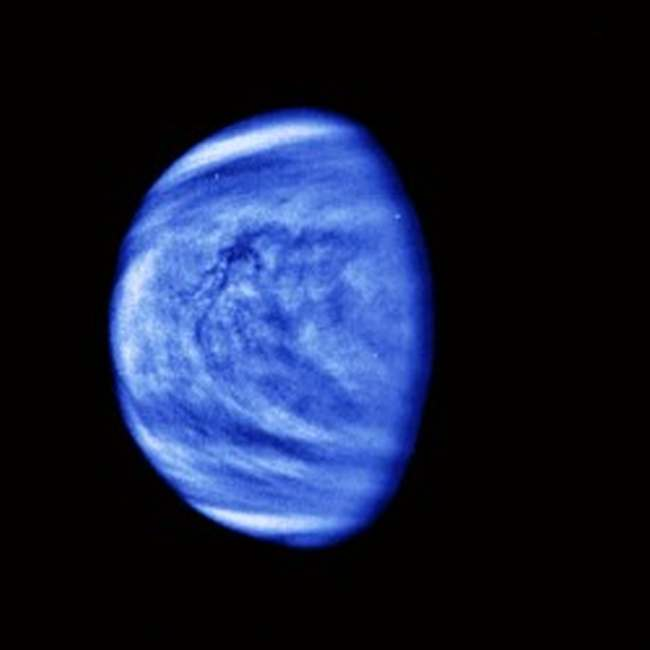
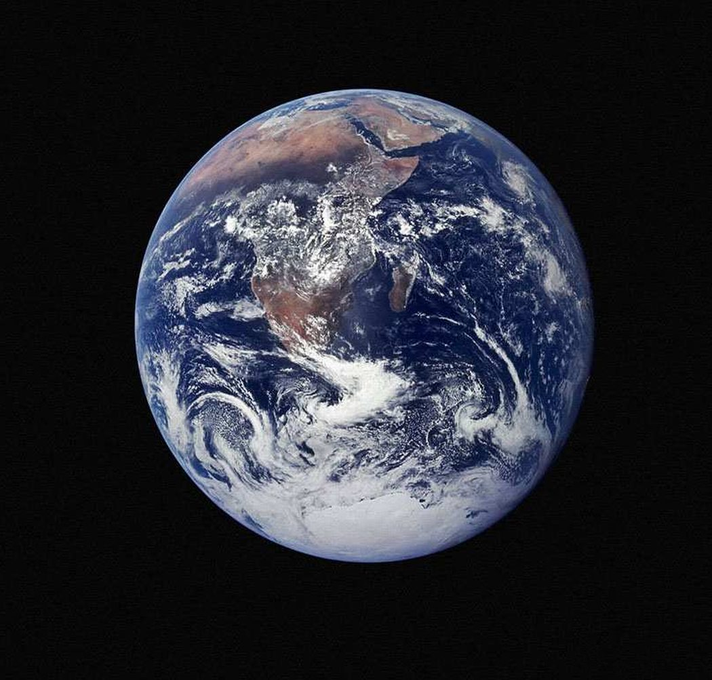
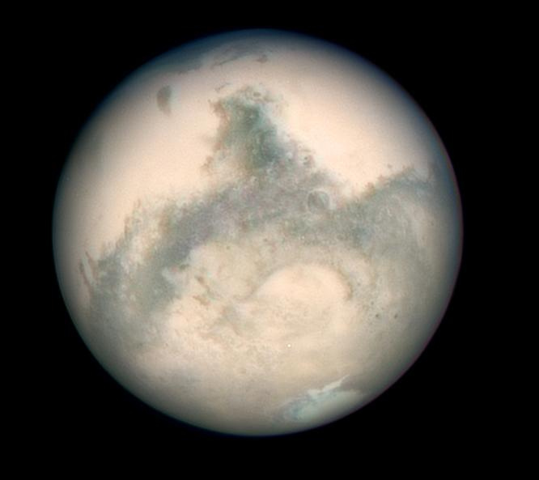

Планеты земного типа
Меркурий
Самая маленькая планета Солнечной системы имеет радиус всего 2440 км. Период обращения вокруг Солнца, для простоты понимания приравненный к земному году, составляет 88 дней, при этом оборот вокруг собственной оси Меркурий успевает совершить всего полтора раза. Таким образом, его сутки длятся приблизительно 59 земных дней. Долгое время считалось, что эта планета все время повёрнута к Солнцу одной и той же стороной, поскольку периоды его видимости с Земли повторялись с периодичностью, примерно равной четырем Меркурианским суткам. Это заблуждение было развеяно с появлением возможности применять радиолокационные исследования и вести постоянные наблюдения с помощью космических станций. Орбита Меркурия – одна из самых нестабильных, меняется не только скорость перемещения и его удалённость от Солнца, но и само положение. Любой интересующийся может наблюдать этот эффект.
Близость к Солнцу стала причиной того, что Меркурий подвержен самым большим перепадам температуры среди планет нашей системы. Средняя дневная температура составляет около 350 градусов по Цельсию, а ночная -170 °C. В атмосфере выявлены натрий, кислород, гелий, калий, водород и аргон. Существует теория, что он был ранее спутником Венеры, но пока это остается недоказанным. Собственные спутники у него отсутствуют.
Венера
Вторая от Солнца планета, атмосфера которой почти полностью состоит из углекислого газа. Её часто называют Утренней звездой и Вечерней звездой, потому что она первой из звёзд становится видна после заката, так же как и перед рассветом продолжает быть видимой и тогда, когда все остальные звёзды скрылись из поля зрения. Процент диоксида углерода составляет в атмосфере 96%, азота в ней сравнительно немного – почти 4% и в совсем незначительном количестве присутствует водяной пар и кислород.
Подобная атмосфера создает эффект парника, температура на поверхности из-за этого даже выше, чем у Меркурия и достигает 475 °C. Считается самой неторопливой, венерианские сутки длятся 243 земных дня, что почти равно году на Венере – 225 земных дней. Многие называют её сестрой Земли из-за массы и радиуса, значения которых очень близки к земным показателям. Радиус Венеры составляет 6052 км (0,85% земного). Спутников, как и у Меркурия, нет.
Земля
Третья планета от Солнца и единственная в нашей системе, где на поверхности есть жидкая вода, без которой не смогла бы развиться жизнь на планете. По крайней мере, жизнь в том виде, в котором мы её знаем. Радиус Земли равен 6371 км и, в отличие от остальных небесных тел нашей системы, более 70% её поверхности покрыто водой. Остальное пространство занимают материки. Ещё одной особенностью Земли являются тектонические плиты, скрытые под мантией планеты. При этом они способны перемещаться, хоть и с очень малой скоростью, что со временем вызывает изменение ландшафта. Скорость перемещения планеты по ней – 29-30 км/сек.
Один оборот вокруг своей оси занимает почти 24 часа, причем полное прохождение по орбите длится 365 суток, что намного больше в сравнении с ближайшими планетами-соседями. Земные сутки и год также приняты как эталон, но сделано это лишь для удобства восприятия временных отрезков на остальных планетах. У Земли имеется один естественный спутник – Луна.
Марс
Четвёртая планета от Солнца, известная своей разрежённой атмосферой. Начиная с 1960 года, Марс активно исследуется учеными нескольких стран, включая СССР и США. Не все программы исследования были успешными, но найденная на некоторых участках вода позволяет предположить, что примитивная жизнь на Марсе существует, или существовала в прошлом.
Яркость этой планеты позволяет видеть его с Земли без всяких приборов. Причем раз в 15-17 лет, во время Противостояния, он становится самым ярким объектом на небе, затмевая собой даже Юпитер и Венеру.
Радиус почти вдвое меньше земного и составляет 3390 км, зато год значительно дольше – 687 суток. Спутников у него 2 — Фобос и Деймос.